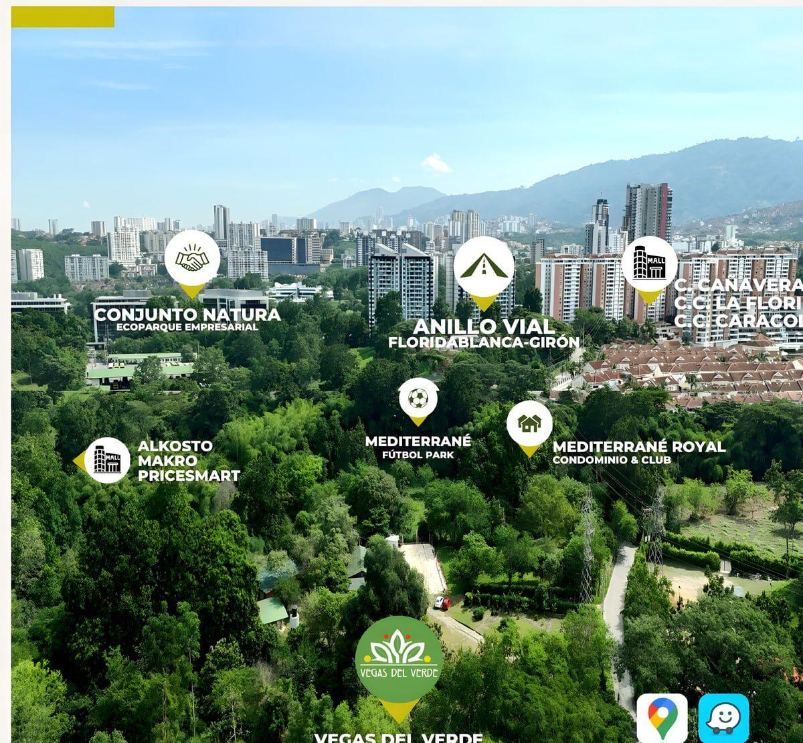

How to get here
How to get here
Location
How to get to Vegas del Verde
Vereda Río Frío, 500 m up the Carabineros road.Floridablanca, Santander, Colombia.
- 10 minutes from the Anillo Vial
- Every day · 6:00 a.m.–10:00 p.m.
WhatsApp 316 675 8362 · we'll confirm the route and availability.
The map
Here we are

Step by step
By car
-
Open the route
In Google Maps or Waze, from the buttons above: they take you to the exact spot on the property.
-
Take the Carabineros road
Vegas del Verde is in Vereda Río Frío, 500 m up the Carabineros road, in Floridablanca.
-
Cross the bridge and turn in on the right
Vehicle entrance and parking: on the right-hand side, immediately after the bridge.
To drop off passengers, or if someone has reduced mobility, use the main entrance, also on the right.
-
Have your ID ready
An identity document must be shown on arrival.
Coming by motorbike, taxi, bus or on foot?
Message us and we'll tell you the best way to get here from where you are.
Good to know when you arrive
-
Opening hours
Monday to Sunday, 6:00 a.m.–10:00 p.m. Please bear in mind our closures for maintenance.
-
Parking
On the right-hand side, immediately after the bridge.
-
No pets
Pets are not allowed, to protect our wildlife.
-
Minors, always accompanied
Minors must be accompanied by a responsible adult at all times.
How far it is
Approximate distances by road.
- Bucaramanga 10.2 km
- Girón 10.3 km
- Chicamocha Canyon 48.8 km
- Zapatoca 62.6 km
- San Gil 98.7 km
- Socorro 118.5 km
- Barichara 120.6 km